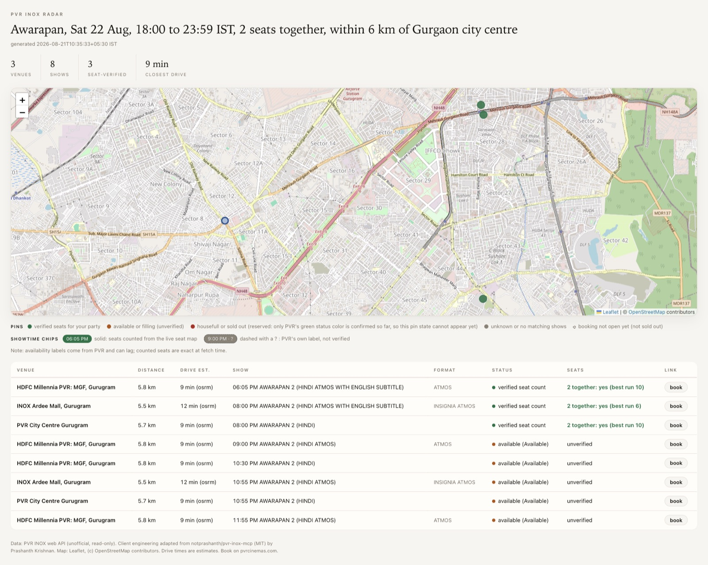

Ask in plain English. The skill reads live showtimes and seat maps across the PVR INOX chain, checks drive times from where you are, and hands you one map to decide from. Read-only: you book on pvrcinemas.com.
AUDI capture, 21 Aug 2026 · row F · 4 together: yes (best run 12)
A real hall from the test fixtures. The green is #76BE43, PVR's own "Available" color, straight from the API. Rows J and K: sold, or never released.

# Inside Claude Code
/plugin marketplace add karanb192/pvr-inox-radar
/plugin install pvr-inox-radar@pvr-inox-radar
# skills.sh one-liner (Claude Code, Codex, Cursor, Gemini and other agents)
npx skills add karanb192/pvr-inox-radar
# Review-first: clone, read it, install the bytes you just read
git clone https://github.com/karanb192/pvr-inox-radar.git
cd pvr-inox-radar && ./install.sh
Python 3.9+ standard library only. No pip, no npm packages, no API key, no login.
Read-only, personal use. The skill reads the same JSON the PVR INOX website uses, politely paced, and never books, holds seats, or touches payment. Scope is the merged PVR INOX chain (about 116 Indian cities); other chains and BookMyShow listings are out of scope.
Worth knowing. PVR withholds some seat rows and releases them later, so a show that reads sold out may simply not be on sale yet. Counted seats are a floor, not a ceiling.